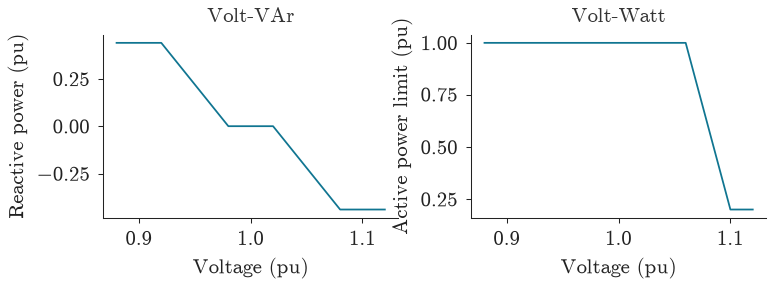

Standards#
popo.standards represents voltage limits and inverter characteristics as named standards. A
study selects a standard by name, so its results record which standard was applied. This module needs
no solver.
Voltage limits#
A VoltageLimits holds a band and the rule for applying it: the share of
samples that must lie inside the band (the coverage) and, where the standard sets one, an extreme bound
that no sample may cross.
from dataclasses import asdict
from popo.standards import VoltageLimits
standards = [
VoltageLimits.en_50160(),
VoltageLimits.ansi_c84_1_range_a(),
VoltageLimits.ansi_c84_1_range_b(),
]
pd.DataFrame([asdict(limits) for limits in standards]).set_index("name")
| lower_pu | upper_pu | coverage | extreme_lower_pu | extreme_upper_pu | reference | |
|---|---|---|---|---|---|---|
| name | ||||||
| EN 50160 | 0.900 | 1.100 | 0.95 | 0.85 | 1.1 | EN 50160:2022, clause 4.2.2 |
| ANSI C84.1 Range A | 0.950 | 1.050 | 1.00 | NaN | NaN | ANSI C84.1-2020, Table 1, service voltage |
| ANSI C84.1 Range B | 0.917 | 1.058 | 1.00 | NaN | NaN | ANSI C84.1-2020, Table 1, service voltage |
EN 50160 requires 95 % of the ten-minute mean voltages in a week to lie within ±10 % of nominal, and none below 0.85 pu. Its extreme upper bound equals its band, so any sample above 1.10 pu fails. ANSI C84.1 Range A requires every sample to lie within ±5 %.
Checking a series#
check() applies the full rule to a series and returns a
ComplianceReport. The example below is one week of ten-minute means: near
nominal, with a dip to 0.88 pu from 18:00 to 18:40 each day.
import numpy as np
samples = np.arange(7 * 144) # one week of ten-minute means
voltage = 1.0 + 0.015 * np.sin(2 * np.pi * samples / 144)
time_of_day = samples % 144
voltage[(time_of_day >= 108) & (time_of_day < 112)] = 0.88 # 18:00 to 18:40, four samples a day
pd.DataFrame([asdict(limits.check(voltage)) for limits in standards]).set_index("standard")
| compliant | n_samples | fraction_within | fraction_below | fraction_above | worst_low_pu | worst_high_pu | extreme_breach | |
|---|---|---|---|---|---|---|---|---|
| standard | ||||||||
| EN 50160 | True | 1008 | 0.972 | 0.028 | 0.0 | 0.88 | 1.015 | False |
| ANSI C84.1 Range A | False | 1008 | 0.972 | 0.028 | 0.0 | 0.88 | 1.015 | False |
| ANSI C84.1 Range B | False | 1008 | 0.972 | 0.028 | 0.0 | 0.88 | 1.015 | False |
The same series complies with EN 50160 and fails both ANSI ranges. EN 50160 permits 5 % of samples
outside its band, and 97.2 % lie inside; ANSI permits none. summary() states the verdict in one line:
print(VoltageLimits.en_50160().check(voltage).summary())
EN 50160: compliant; 97.22 % within band, range 0.8800 to 1.0150 pu
Where and for how long#
violations() returns the readings outside the band, with the side
and the distance past the bound. It takes any frame with a vmag_pu column, such as the output of
bus_voltages().
readings = pd.DataFrame({"bus": ["a", "b", "c", "d"], "vmag_pu": [0.93, 1.0, 1.06, 1.12]})
VoltageLimits.ansi_c84_1_range_a().violations(readings)
| bus | vmag_pu | side | severity_pu | |
|---|---|---|---|---|
| 0 | a | 0.93 | low | 0.02 |
| 2 | c | 1.06 | high | 0.01 |
| 3 | d | 1.12 | high | 0.07 |
event_summary() takes one voltage trace per customer and counts
the steps outside the band, their mean severity and the longest unbroken run. Two customers with the
same maximum voltage can differ in duration:
traces = {
"brief": [1.02, 1.04, 1.12, 1.04, 1.02, 1.02, 1.02, 1.02],
"sustained": [1.02, 1.11, 1.12, 1.12, 1.11, 1.11, 1.04, 1.02],
}
VoltageLimits.en_50160().event_summary(traces)
| name | v_mean_pu | v_min_pu | v_max_pu | v_std_pu | over_steps | over_severity_pu | over_longest_steps | under_steps | under_severity_pu | under_longest_steps | |
|---|---|---|---|---|---|---|---|---|---|---|---|
| 0 | brief | 1.038 | 1.02 | 1.12 | 0.032 | 1 | 0.020 | 1 | 0 | 0.0 | 0 |
| 1 | sustained | 1.081 | 1.02 | 1.12 | 0.043 | 5 | 0.014 | 5 | 0 | 0.0 | 0 |
Inverter characteristics#
InverterCapability is the reactive power an inverter must be able to supply,
as a fraction of its rating: 0.44 under IEEE 1547 category B and 0.33 under EREC G99.
VoltVarCurve sets reactive power against voltage, and
VoltWattCurve sets the share of active power allowed against voltage. Both
have an IEEE 1547 default.
import matplotlib.pyplot as plt
from popo.plotting import line_style, style, tokens
from popo.standards import VoltVarCurve, VoltWattCurve
line_style.configure(latex=False)
volts = np.linspace(0.88, 1.12, 241)
volt_var = VoltVarCurve.ieee_1547_default()
volt_watt = VoltWattCurve.ieee_1547_default()
fig, (left, right) = plt.subplots(1, 2, figsize=style.panel(0.8, 0.37))
left.plot(volts, volt_var.reactive_power_pu(volts), color=tokens.PRIMARY, lw=line_style.LINE_WIDTH)
left.set_title("Volt-VAr", fontsize=10)
left.set_ylabel("Reactive power (pu)")
right.plot(volts, volt_watt.active_power_pu(volts), color=tokens.PRIMARY, lw=line_style.LINE_WIDTH)
right.set_title("Volt-Watt", fontsize=10)
right.set_ylabel("Active power limit (pu)")
for ax in (left, right):
ax.set_xlabel("Voltage (pu)")
line_style.finish(ax)
line_style.show(fig)

The Volt-VAr curve supplies reactive power below 0.98 pu and absorbs it above 1.02 pu, reaching the 0.44 pu capability at 0.92 and 1.08 pu. The Volt-Watt curve starts curtailing at 1.06 pu and reaches its 0.2 pu floor at 1.10 pu. Scenarios installs both on a feeder.
Limitations#
checktreats each sample as given. EN 50160 is defined on ten-minute means over a week; a simulation in 30-minute steps over two days is an approximation of that rule.The limits apply to the voltage at the customer’s connection. A voltage at the substation busbar says little about compliance further along the feeder (see Power flow).
The standards here cover steady-state voltage magnitude. Flicker, unbalance and harmonics, which EN 50160 also limits, are not modelled.